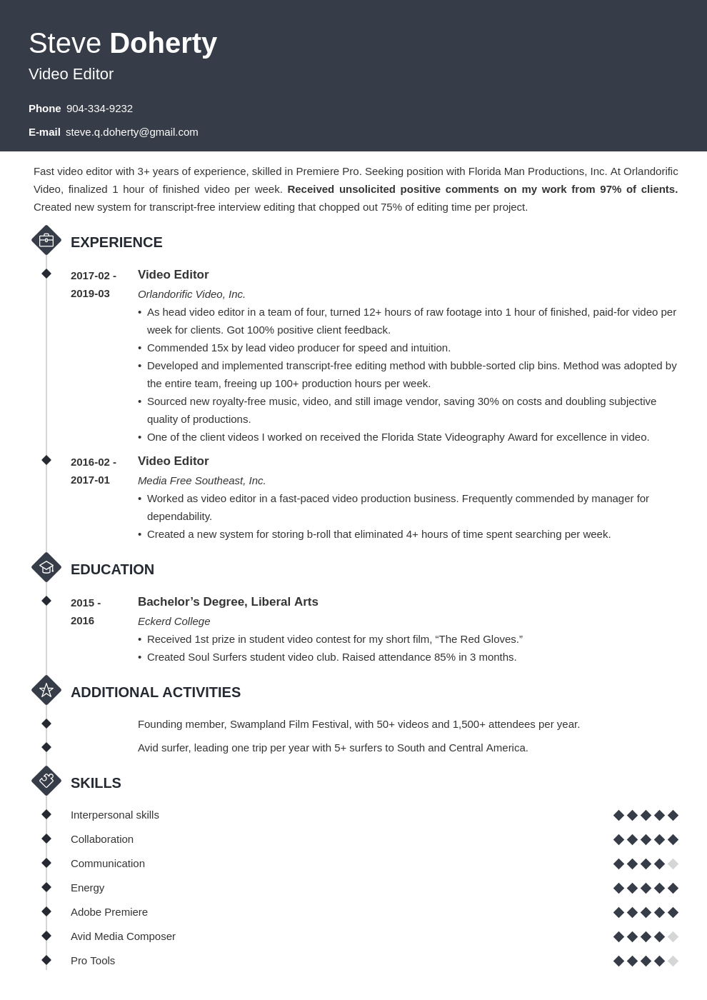
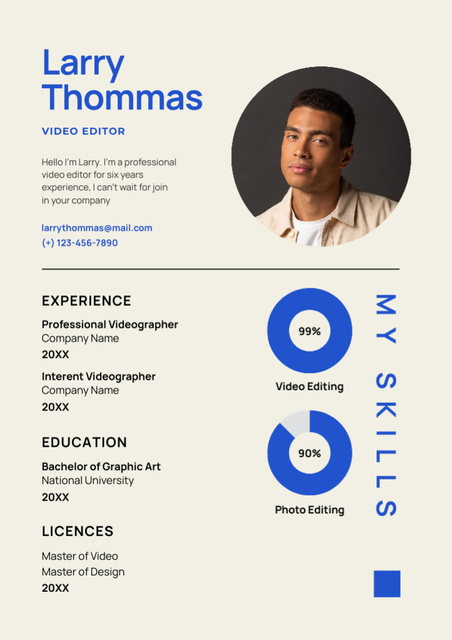

Why Use Our Resume Builder?

Live Preview
See your resume update instantly as you type. No need to save or refresh - every change appears in real-time, making it easy to perfect your resume on the fly.

Multiple Templates
Choose from a wide selection of modern and professional designs. Each template is carefully crafted to help you stand out in today's competitive job market.

Download PDF
Export your resume as a high-quality PDF ready for printing or emailing. Professional formatting ensures your resume looks perfect on any device.

Responsive Design
Works perfectly on mobile and desktop devices. Create and edit your resume from anywhere, at any time, on any device.